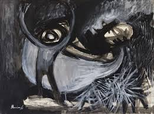
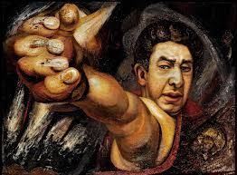
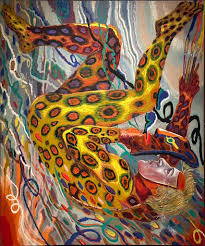

Exhibiciones Actuales

Diálogos de Vanguardia
Un vistazo a los movimientos artísticos del siglo XX.

Mexiac
Exploración de los colores y técnicas impresionistas.

XX en el Siglo XXI
Impactos culturales y sociales del arte en el mundo moderno.

Luces del Impresionismo
La muestra presentara 3 obras referenciales de claude monet, dos de ellas nunca antes vistas en México.

Transmutaciones
Es una selección del trabajo de las últimas cuatro décadas en la trayectoría plástica del arte michoacano

La Huella Indeleble
Artista Multifécito y apartado por cuenta propia, de las corrientes plásticas que permearon el quehacer artístico.